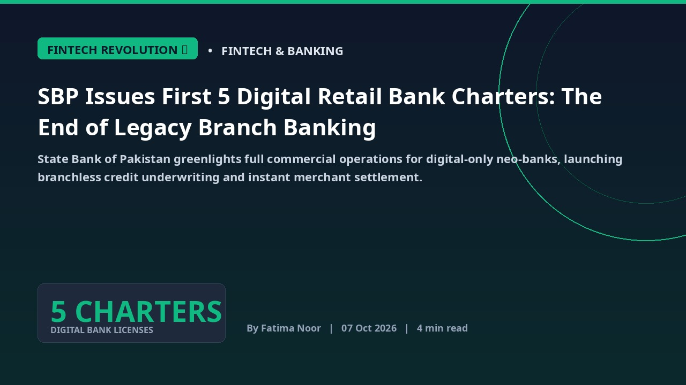

Stories Archive — Page 4
Explore earlier tech briefings, investigative reports, and dispatches.
CM Maryam Nawaz Boosts Female Mobility: Pink Buses Launched at Kohsar University Murree
Punjab Chief Minister Maryam Nawaz Sharif has initiated a significant step towards empowering female students by providing two dedicated Pink Buses to Kohsar University Murree, addressing critical transportation challenges.
Beyond the Headlines: Deconstructing Rs. 76 Billion High-Tech Influx in Punjab's SEZs
Punjab's Allama Iqbal Industrial City and Quaid-e-Azam Business Park are poised for a significant leap, securing substantial domestic and foreign commitments. This investment targets advanced electronics and burgeoning clean energy sectors, hinting at a transformative industrial shift.
Spotify's Audiobook Entry: Decoding Pakistan's New Digital Creator Economy Frontier
Spotify's foray into Pakistan's audiobook market promises a transformative shift for local authors and narrators. This move opens direct monetization pathways, poised to significantly bolster the nation's burgeoning digital economy and creative output.
Unikrew's ASOCIO Victory: A Deep Dive into Pakistan's Emerging AI Fintech Frontier
Karachi-based Unikrew Solutions' ASOCIO 2026 Tech Award win shines a spotlight on Pakistan's burgeoning AI capabilities in financial services. This recognition signals a pivotal moment for local innovation, pushing the boundaries of biometric authentication and inclusive credit scoring across the Asia-Pacific.
Pakistan's AI Ambitions Take Flight: Local Firms Secure Global Deals at Dubai Summit
Pakistani software exporters and machine learning labs have unveiled cutting-edge proprietary Arabic and Urdu natural language models, successfully signing significant regional enterprise contracts at a premier Dubai global summit. This landmark achievement underscores the nation's burgeoning AI prowess and positions its tech sector for unprecedented international growth.
Beyond Brute Force: Unpacking Pakistan's Escalating Credential Stuffing Crisis
A critical advisory from NCERT and NTC has laid bare a sinister truth: coordinated brute-force attacks are targeting vulnerable digital portals across Pakistan. This widespread threat, fueled by weak password practices, jeopardizes both governmental integrity and the financial security of everyday citizens.
Google Playground Unlocks AI-Driven Game Development for All
Google's new browser-based Playground platform leverages artificial intelligence to empower anyone to create custom games using simple prompts, eliminating the need for complex coding skills. This innovation marks a significant leap in democratizing game development.
Pakistan's Forex Reserves Edge Up by $15M: A Glimmer of Stability?
Pakistan's foreign exchange reserves recorded a modest increase of $15 million in the week ending October 2, 2026, marking a slight upward movement in the nation's critical financial indicators. This minor accretion offers a cautious signal amidst ongoing efforts to stabilize the economy.
Jazz's 5G Push for Consumer Choice: Decoding Pakistan's Path to Next-Gen Connectivity
Jazz's latest 5G campaign spotlights consumer empowerment, yet the true rollout of next-generation connectivity in Pakistan grapples with intricate economic, regulatory, and infrastructural challenges. This report dissects the realities on the ground, from device affordability to spectrum dynamics.
Pakistan's Digital Chokepoint: A Deep Dive into PTA's 88% Social Media Blocking Efficacy
The Pakistan Telecommunication Authority reports an 88% compliance rate in blocking objectionable social media content, processing over 1.78 million URLs. This report unravels the implications for digital freedom, economic growth, and the future of online expression across the nation.
Pakistan's National Semiconductor Lab: First Indigenous 28nm RISC-V Silicon Taped Out
Islamabad chip design cluster completes post-silicon validation for low-power edge compute, cutting reliance on foreign microarchitecture licenses.

FINTECH REVOLUTION 💳SBP Issues First 5 Digital Retail Bank Charters: The End of Legacy Branch Banking
State Bank of Pakistan greenlights full commercial operations for digital-only neo-banks, launching branchless credit underwriting and instant merchant settlement.